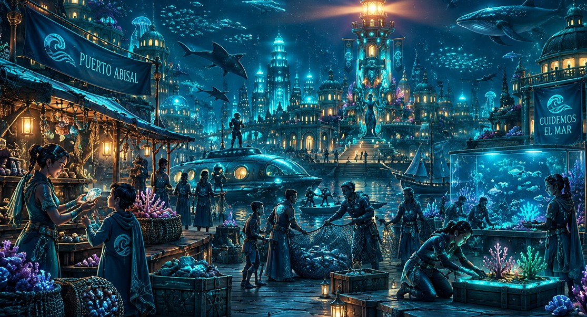
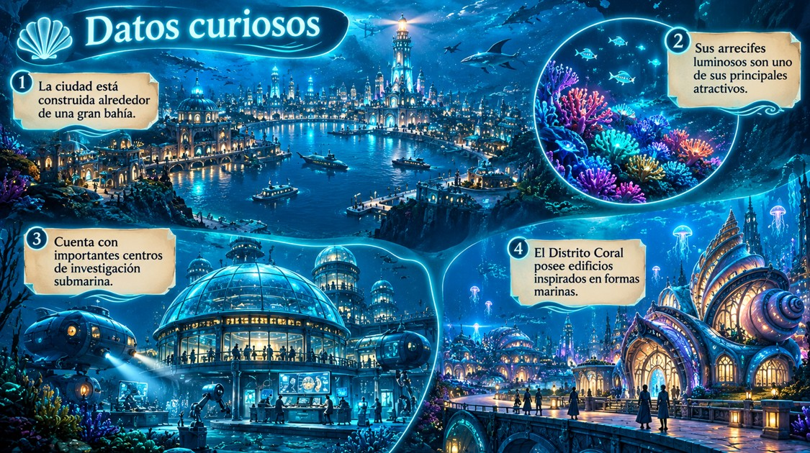

Historia de Puerto Abisal
Puerto Abisal es una ciudad costera construida alrededor de una enorme bahía. Fue fundada en 1874 por un grupo de exploradores y comerciantes que descubrieron las características especiales de la zona. Con el paso de los años, la ciudad creció gracias a la actividad portuaria, la investigación submarina y el turismo. Actualmente es reconocida por sus arrecifes luminosos, sus paisajes y su tecnología relacionada con el océano.

Identidad de la ciudad.
Los habitantes de Puerto Abisal se caracterizanpor su relación con el mar. Muchas de sus tradiciones y actividades están vinculadas con la vida costera, la exploración y el cuidado del ambiente.
Sectores de Puerto Abisal
- Centro Histórico
- Puerto
- Distrito Coral
- Zona de Acantilados
Datos principales
- Población
- 245.000 habitantes.
- Año de fundación
- 1874.
- Gentilicio
- Abisaleño / Abisaleña.
- Clima
- Oceánico, con temperaturas moderadas durante gran parte del año.
- Actividad principal
- Turismo, investigación submarina y actividades portuarias.
Costumbres
Una de las principales costumbres de Puerto Abisal es celebrar cada año el Festival de las Luces Marinas. Durante este evento, los habitantes decoran el puerto con luces inspiradas en los arrecifes luminosos de la bahía.

Datos curiosos
Conocé más sobre las particularidades que hacen única a nuestra ciudad.
- La ciudad está construida alrededor de una gran bahía.
- Sus arrecifes luminosos son uno de sus principales atractivos.
- Cuenta con importantes centros de investigación submarina.
- El Distrito Coral posee edificios inspirados en formas marinas.